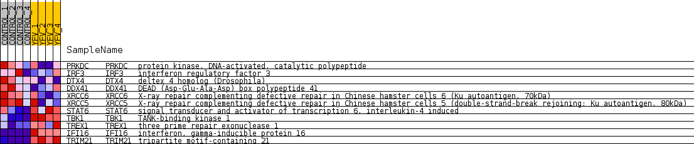
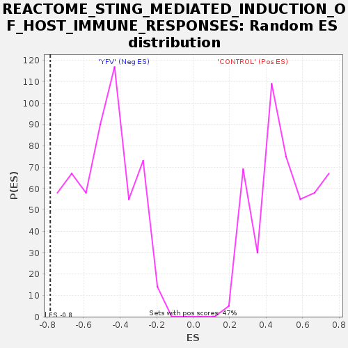

Profile of the Running ES Score & Positions of GeneSet Members on the Rank Ordered List
| Dataset | MATRIZ_GSE99081_collapsed_to_symbols.gsea_CLASE_99081.cls#CONTROL_versus_YFV |
| Phenotype | gsea_CLASE_99081.cls#CONTROL_versus_YFV |
| Upregulated in class | YFV |
| GeneSet | REACTOME_STING_MEDIATED_INDUCTION_OF_HOST_IMMUNE_RESPONSES |
| Enrichment Score (ES) | -0.7828162 |
| Normalized Enrichment Score (NES) | -1.6040808 |
| Nominal p-value | 0.0 |
| FDR q-value | 0.066968925 |
| FWER p-Value | 0.865 |
| SYMBOL | TITLE | RANK IN GENE LIST | RANK METRIC SCORE | RUNNING ES | CORE ENRICHMENT | |
|---|---|---|---|---|---|---|
| 1 | PRKDC | protein kinase, DNA-activated, catalytic polypeptide | 2505 | 0.412 | -0.1085 | No |
| 2 | IRF3 | interferon regulatory factor 3 | 3858 | 0.253 | -0.1635 | No |
| 3 | DTX4 | deltex 4 homolog (Drosophila) | 3993 | 0.243 | -0.1447 | No |
| 4 | DDX41 | DEAD (Asp-Glu-Ala-Asp) box polypeptide 41 | 4246 | 0.224 | -0.1352 | No |
| 5 | XRCC6 | X-ray repair complementing defective repair in Chinese hamster cells 6 (Ku autoantigen, 70kDa) | 5118 | 0.147 | -0.1725 | No |
| 6 | XRCC5 | X-ray repair complementing defective repair in Chinese hamster cells 5 (double-strand-break rejoining; Ku autoantigen, 80kDa) | 5583 | 0.107 | -0.1892 | No |
| 7 | STAT6 | signal transducer and activator of transcription 6, interleukin-4 induced | 15218 | -0.698 | -0.7050 | Yes |
| 8 | TBK1 | TANK-binding kinase 1 | 15405 | -0.788 | -0.6286 | Yes |
| 9 | TREX1 | three prime repair exonuclease 1 | 15760 | -1.051 | -0.5333 | Yes |
| 10 | IFI16 | interferon, gamma-inducible protein 16 | 16119 | -2.374 | -0.2907 | Yes |
| 11 | TRIM21 | tripartite motif-containing 21 | 16147 | -2.674 | 0.0057 | Yes |

